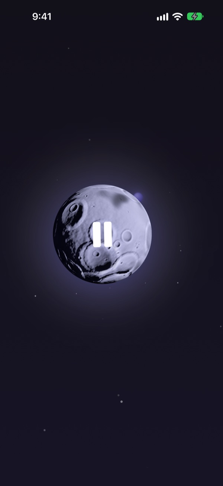
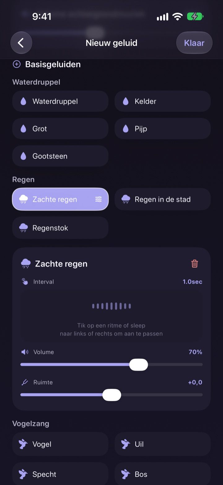
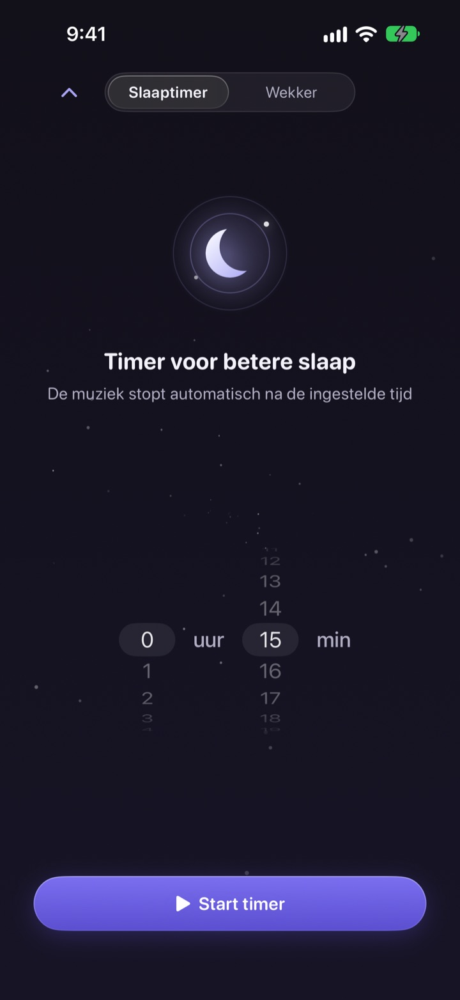
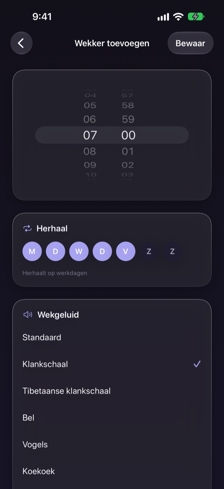
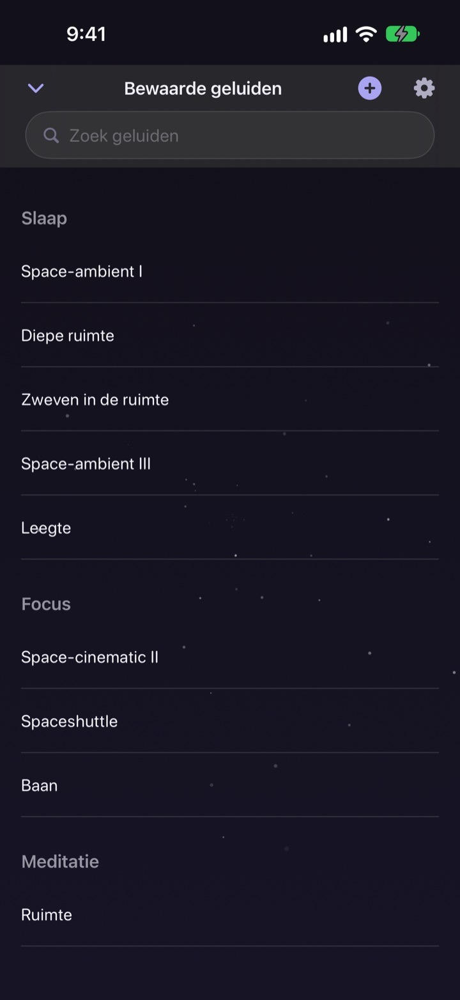

Verspil de nacht niet
aan zoeken naar het juiste geluid
Stapel één keer regen, waterdruppels en een klankschaal tot je eigen geluid. Vanaf de volgende nacht is het één tik op de maan.
Alle geluiden zijn gratis te beluisteren. Voor iPhone en iPad.

Ooit een uur bezig geweest met iets zoeken om bij in slaap te vallen?
De regen is te eentonig, de golven te hard en de video die je opzet wordt midden in de nacht onderbroken door een advertentie. Met Dalbit stapel je zelf de geluiden die je mooi vindt tot het precies bij jou past, en bewaar je het achter één maan.
Bouw je geluid op in lagen
Stapel regen, waterdruppels, vogelgezang en klankschalen. Stel per laag het volume in, hoe vaak hij klinkt en waar je hem hoort, en leg er golven of piano onder als achtergrondmuziek.
Geef je mix een naam, sla hem op en zet hem elke nacht weer aan.

Het sterft weg zonder je te wekken
De slaaptimer kapt het geluid nooit abrupt af. Hij draait het langzaam zachter, zodat het einde je niet wakker maakt.
Het geluid speelt door met het scherm uit of in een andere app, en als je niets aanraakt, dimt het scherm vanzelf.

's Ochtends zacht gewekt
Zet wekkers met een klankschaal, Tibetaanse schaal, vogelgezang of koekoek en herhaal ze op de dagen die jij kiest.

Eén maan voor alles
Tik op de maan om af te spelen en nog eens om te pauzeren. Veeg opzij voor een ander geluid, omhoog voor de slaaptimer en omlaag voor je opgeslagen geluiden.
Voelt een geluid goed? Houd de maan ingedrukt om het aan je favorieten toe te voegen.

In drie stappen aan de slag
- 1
Tik op de maan
Open de app, tik op de maan en het geluid begint meteen.
- 2
Veeg opzij
Blijf vegen tot je een geluid vindt dat je bevalt.
- 3
Zet de timer en ga liggen
Veeg omhoog, kies een tijd en daarna sterft het geluid langzaam weg.
Wat de maan doet
- Tikken
- afspelen, pauzeren
- Opzij vegen
- volgend geluid
- Omhoog vegen
- slaaptimer en wekkers
- Omlaag vegen
- opgeslagen geluiden
- Ingedrukt houden
- toevoegen aan favorieten
Je kunt ook pauzeren en verdergaan via de afspeelknoppen op het toegangsscherm.
Luisteren is gratis. Premium is om meer te maken.
Gratis
- Alle geluiden
- Geluiden stapelen tot je eigen mix
- Tot drie mixen opslaan
- Slaaptimer die langzaam uitfadet
- Wekkers met zachte geluiden
- Favorieten
Dalbit Premium
- Maak en bewaar zoveel mixen als je wilt
Maandabonnement met automatische verlenging en gratis proefperiode
Het abonnement wordt automatisch verlengd, tenzij je het minstens 24 uur voor het einde van de huidige periode opzegt. Na de gratis proefperiode wordt er afgerekend. De standaardgebruiksvoorwaarden van Apple (EULA) zijn van toepassing.
Veelgestelde vragen
Hoe speel ik geluiden af en wissel ik ze?
Tik op de maan op het beginscherm om af te spelen en nog eens om te stoppen. Veeg opzij voor een ander geluid, omhoog voor de slaaptimer en omlaag voor je bibliotheek.
Stopt het geluid als het scherm uitgaat?
Nee. Het speelt door met het scherm uit of in een andere app. Tik nog eens op de maan of gebruik de knoppen op het toegangsscherm om het te stoppen.
Wat gebeurt er als de slaaptimer afloopt?
Het geluid stopt niet abrupt. Het wordt geleidelijk zachter en stopt dan, zodat je niet wakker wordt.
Mijn wekker gaat niet af.
Bij je eerste wekker vraagt de app om toestemming. Controleer of die aanstaat in Instellingen > Dalbit.
Waar worden mijn mixen bewaard?
Je mixen, wekkers en instellingen staan alleen op dit apparaat. Verwijder je de app, dan verdwijnen ze ook.
Wat kan ik gratis gebruiken?
Alle geluiden, lagen stapelen en tot drie eigen mixen. De slaaptimer en wekkers zijn ook gratis. Premium haalt de limiet op het aantal mixen weg.
Hoe zeg ik mijn abonnement op?
Ga naar Instellingen > Apple Account > Abonnementen, kies Dalbit en zeg op. Zeg je niet minstens 24 uur voor het einde van de periode op, dan wordt het automatisch verlengd.
Nieuwe telefoon en mijn abonnement is weg.
Log in met hetzelfde Apple Account, open het abonnementsscherm in Dalbit en tik op Herstel aankopen.
Hoe meld ik een fout of stel ik een functie voor?
Stuur feedback via de instellingen van de app of mail naar het adres hieronder. Meestal reageren we binnen een paar dagen.
Vragen of ideeën? Mail naar mizzking75@gmail.com.